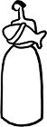

"Öyle seveceksin ki kelimeleri sana yetecekler" demişti Cemil Meriç vaktiyle. "Bir davet olarak güzel kelime ve dualarda muhterem. Gönülden gönüle köprü, asırdan asıra merdiven. Kelime, kendimi seyrettiğim dere." Öyle seveceksin ki kelimeleri hem fazlasıyla yetecek hem de bir türlü yetmeyecekler sana. Kovalayacaksın manalarını, açık ve saklı, adım adım iz süreceksin peşlerinde, yitip de gitmesinler diye, onları yitirdiğin takdirde kendinden de ne çok yitireceğini bile bile. Kelimelerin kudretini, ehemmiyetini teslim etmek demektir yazarlık. Ve bir de tabii, masum olmadıklarını. Lakin gelin görün ki, Türkiye'de nicedir pek az kelime "kadın" kelimesi kadar sıkça ve yaygınlıkla yakıştırılmaktadır bu sıfata, yani tekinsizliğe, belirsizliğe. "Kadın" kelimesinde acaba bilmediğimiz bir nahoşluk, sakıncalı bir durum mu var? Aksi takdirde bu kelimeyi telaffuz ederken niçin böylesine zorlansın ki insanlar? Salt bu kelimeyi kullanmamak için, hele hele yüz yüze insan ilişkilerinde telaffuz etmek durumunda kalmamak için sürüsüne bereket alternatifler üretilmiş bile. Bahsi geçen kadın görece genç ise sorun yok, "kız" kelimesi imdada yetişir. Keza yaşlı ise gene mesele değil, "teyze, hanımnine" ya da duruma/sınıfa göre "hanfendi", o da olmadı ağzı yaya yaya "ha-nım-e-fen-di" ne güne duruyor? Ama ya bu iki kategorinin orta yerine denk düşüveren o geniş sayıda kadına nasıl hitap edilecek? Bir sıkıntı, bir rahatsızlık, bir iğretilik... Sanki "kadın" kelimesinde bilmediğimiz bir kusur, üzeri derhal örtülmesi icap eden bir ayıp varmışçasına. Sırf kadın dememek için kimi zaman "bacı", kimi zaman "bayan" ve en çok da "siz hanımlar!.."
"Kadın" kelimesinin verdiği rahatsızlık hem birebir insan ilişkilerinde, gündelik yaşamda hem de kamusal alanın sahnelerinde zuhur ediyor art arda. Bir kadına doğrudan hitap etmek durumunda kalınca sıkılıp gereksiz bir nezaket içine giriliyor; hani sanki "siz kadınlar..." dese, beriki alınacak, kalbi kırılacak, kendini hakarete uğramış sayacak, "estağfurullah" demek gerekecek; vaktiyle pek muktedir bir şahsiyetin ifade ettiği üzre bir özür mahiyetinde "Ne yapsınlar, Allah da onları kadın yaratmış?" diyerek onlar adına özür dilemek gerekecek. Bire bir gündelik yaşam diyaloglarıyla sınırlı kalmayan bu tutukluk, dile vurulmuş ket halleri nasıl olduysa aynen sirayet etmiş siyaset hayatımıza ve kamusal alana. "Eşler toplantıları", "hanfendiler buluşmaları", "hanım kolları", "bayanlar müsabakaları"... Siz hiç "erkek" kelimesi yerine benzer bir bağlamda "bay" kelimesinin kullanıldığını duydunuz mu? "Baylar voleybol müsabakası" diye bir ifade biçimi icat edilmedi ise "bayanlar" versiyonu niçin çıktı bunun? Yoksa bizim bilmediğimiz bir ayıp mı saklı "kadın" kelimesinde?
Madem bu kadar sıkıntı veriyor niteliğimiz ve dahi kendimiz, madem böyle eğip bükmek gerekiyor varlığımızı, o da olmazsa isimlerimizi, kulağımızı ve kişiliğimizi bükmek gerekiyor ki dahil olabilelim toplumsal dil sözlüğüne kıyısından köşesinden, madem bu kadar yadırganıyoruz aslında, bir alternatif kelime de ben önereyim dedim "kadın" yerine. İstihareye yatar gibi açtım baktım canım Mesnevi'yi. Sayfa 518'de, Tirmiz Padişahı Seyyid'in Semerkand'a gidiş hikâyesi çıktı karşıma. Parmağımın gölgesinde kalan kelimeye baktım: Harzemşah!
En iyisi toptan kaldıralım "kadın" kelimesini. Nasıl olsa dilden kelime ayıklamaya alışkın milletiz. Bir kuşak geçmesi yeter de artar ayıklanan kelimenin toptan unutulması için. Bir sonraki kuşak hatırlamaz bile. Bunu da söküp çıkartırız elbet. Madem hazmedemedik ve hazmedemiyoruz bir türlü "kadın" kelimesini, "Harzemşah" kullanalım onun yerine. "Siz Harzemşahlar..." diye hitap edelim, "Harzemşahlar Musiki Cemiyetleri" kuralım, "Harzemşahlar Mağazaları-Reyonları" açalım, "Harzemşahlara rehberler..." kaleme alalım... Üstümüzden yük, muhabbetimizden tutukluk kalksın, nasıl olsa kalkmayacak bu toplumda kadınlar aleyhine deveran eden önyargılar, bari dilimiz ferahlasın.
Michigan